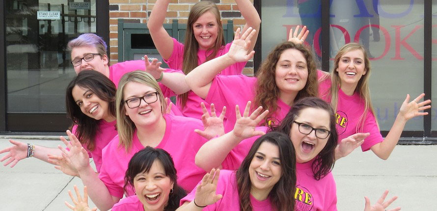
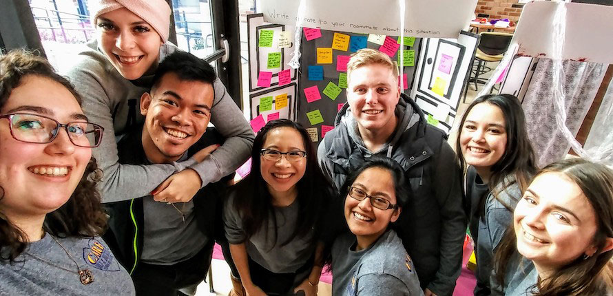
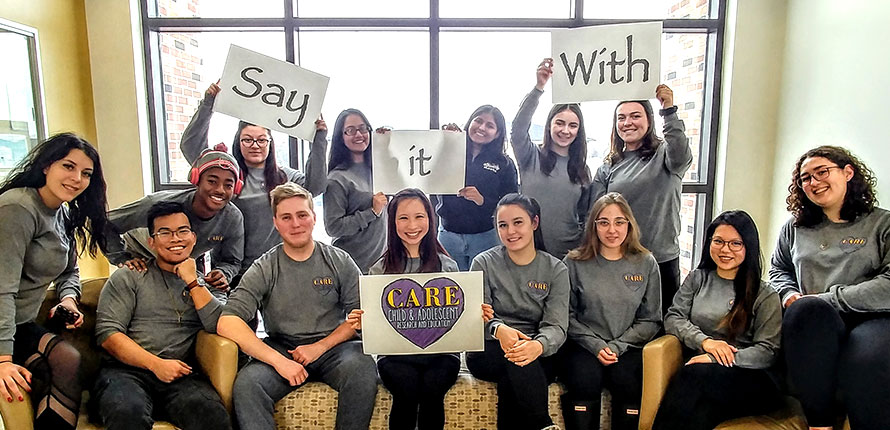

Lab Life
Experience the collaborative and engaging environment of the CARE Lab

CARE Lab Team 2022

Supporting Pink Shirt Day

Team Group Display

Say it with CARE Campaign
CARE Lab Group Activity
Team Collaboration Session

Research Discussion Group
Community Engagement Event